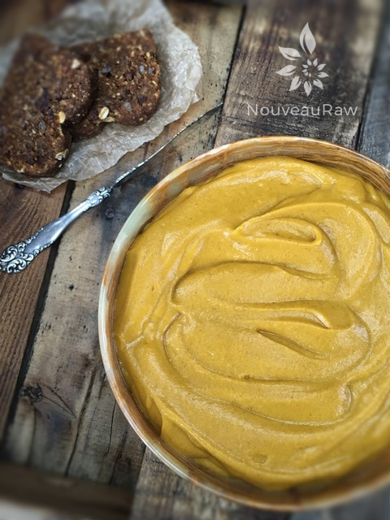

Chai Pumpkin Spice Fudge with Maple Pumpkin Butter Frosting

~ raw, vegan, gluten-free ~
A Breath of Autumn
If someone were to ask me to describe what Autumn tastes like… I would have to share a bite of this Chai Pumpkin Spice Fudge with them. The deep rich chocolate flavor is enough to make the endorphins take flight, bringing you right in the land of contentment and joy.
The chai tea seasoning has its own “warming” effect on the mind, body, and spirit. I used the contents from tea bags, which gave me the perfect blend of cardamom, allspice, cinnamon, cloves, and ginger. Don’t you feel warm inside just reading that?
But let’s not forget the pumpkin frosting. The thought and taste of pumpkins alone will transport you back to the childhood days where you played endlessly in piles of racked up leaves.
If you don’t have any chai spiced tea on hand, you can make a close flavor profile right out of your spice drawer. You will want to combine one teaspoon of ground cardamom, one teaspoon ground allspice, one teaspoon ground cloves, two teaspoons ground cinnamon, and three teaspoons ground ginger in a jar. Close the lid and give a good shake. Start with one tablespoon worth and see if that is strong enough in flavor for you.
This recipe is a cross between a brownie and fudge. It’s sticky; it’s gooey, it’s devilishly good. These are very rich, so I recommend cutting them into smaller bite-size pieces to avoid any tummy aches from overindulging. I hope you enjoy this recipe, please comment below before leaving. Blessings, amie sue
yields 24 fudge bites
Dry Ingredients:
Wet Ingredients:
- 4 cups Medjool dates, re-hydrated
- 1/2 cup dried apricots, diced (divided)
- 1/4 cup maple syrup
- 2 Tbsp cold-pressed raw coconut oil, melted
- 1 tsp vanilla extract
Frosting:
Preparation:
- Prepare an 8×8, straight-edged pan by lining it with plastic wrap. This will help when it comes time to remove the fudge. Set aside.
- Place cacao powder, flax, chia tea contents, salt, and pumpkin spice, into the food processor and process until well mixed.
- Don’t have pumpkin spice on hand? No problem, you can make your own, here’s how: Ingredients: yields 8 teaspoons of Pumpkin Spice: 4 tsp ground cinnamon, 2 tsp ground ginger, 1 tsp Allspice, and 1 tsp nutmeg. Mix ingredients in a bowl. Store in an airtight container.
- Add the dates, dried apricots, sweetener, oil, and vanilla. Process until to turns to a thick, fudgy texture. This is going to be sticky. You have been pleasantly warned.
- Remove the dough and place in a large bowl.
- Tip ~ The batter is thick and sticky. Sometimes it helps to either wet your hands or rub a little coconut oil on them, so the batter does stick to your hands too much. Then again, being able to lick your fingers clean is part of the reward for making such a delicious dessert!
- Press the dough into the pan, firmly and evenly.
- Spread the Maple Pumpkin Butter Frosting on top.
- Put the fudge in the freezer and let it sit for a least an hour or overnight.
- Slice into desired sized squares and EAT!
- IF you have any leftovers, I recommend storing them in the fridge or freezer.
- These freeze amazingly! I recommend cutting them into squares before freezing.

© AmieSue.com